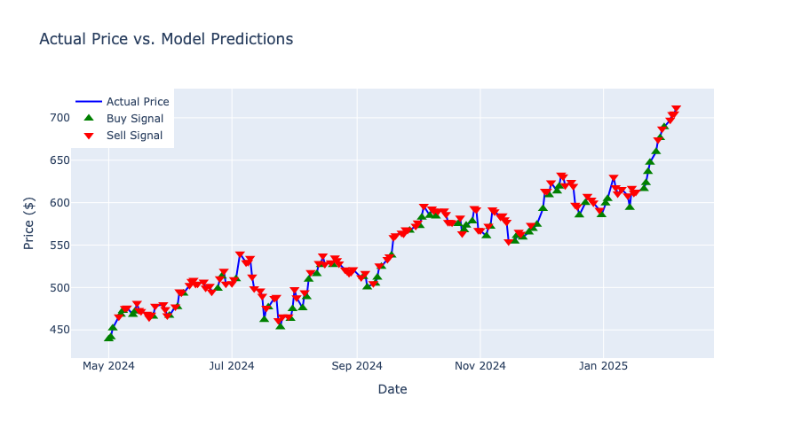
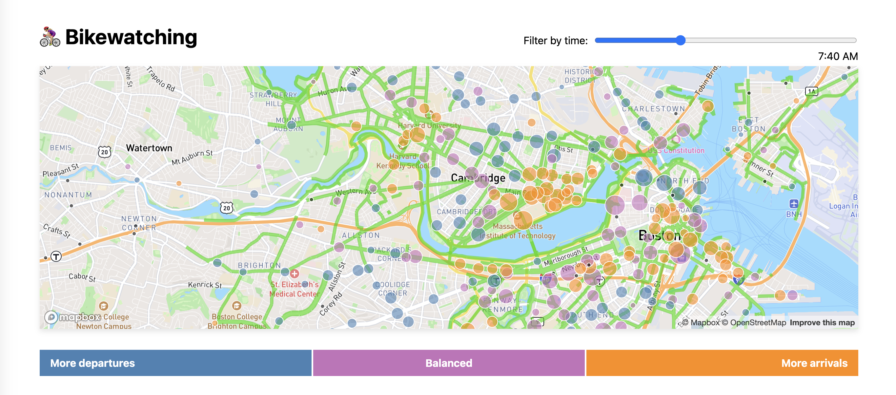
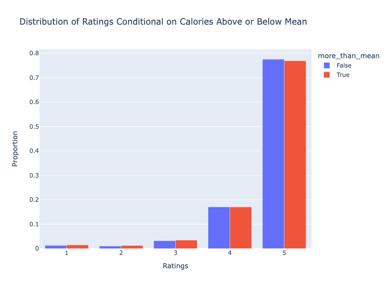

Projects
🚀 Predicting Meta's Future: A Data-Driven Trading Strategy
Can machine learning outsmart the stock market? In this project, I built an AI-powered trading system to predict Meta’s (META) stock price movements and automate buy/sell decisions. Using historical data, advanced predictive models, and rigorous backtesting, I created a strategy designed to maximize returns while minimizing risk. Curious to see how it performs? Dive into the analysis and explore the results!
Explore 🚴🏼♀️ Boston on Two Wheels: An Interactive Bike Traffic Map
Ever wondered how Boston’s cycling scene ebbs and flows throughout the day? This immersive visualization takes you straight to the streets, mapping bike traffic patterns across the city with real-time interactivity.
- 🚲 Bike Lanes in Green: Navigate Boston’s dedicated cycling routes and see how the city is built for bikers.
- 📍 BlueBike Stations as Dynamic Circles: The size reflects activity—bigger means busier. The color tells a story: is the station a hotspot for departures or arrivals?
- ⏳ Time Slider for Peak Insights: Adjust the slider to watch the city wake up, hit rush hour, and wind down—all through the lens of 260,000 rides in March 2024.
Built using datasets from the city governments of Boston and Cambridge, along with BlueBikes trip data, this project brings urban mobility to life—one ride at a time. 🚴♂️✨
Explore 🌤️ Find Your Sunshine: Customize Your Perfect Climate
How much sunshine do you need to be happy? In this interactive Tableau visualization, I created a tool that lets you choose your preferred minimum hours of sunshine and discover which cities meet your criteria each month. Using a vibrant color gradient (yellow to red), the dashboard updates in real-time to show you the best destinations for your ideal climate. Whether you’re a sun-worshipper or just need a little extra Vitamin D, this visualization is your personalized guide to sunny living!

☀️🌧️ Finding the Perfect Balance: Cities with Ideal Sunshine and Rain
What if you could live in a city with the perfect balance of sunshine and rain? In this Tableau visualization, I explored which cities offer the ideal mix of sunny and rainy days throughout the year. Using normalized data, I highlighted cities like San Francisco and Miami, where the balance between sun and rain is just right. Dive into the visualization to see how I used shapes, colors, and dual-axis charts to bring this data to life—and discover which city might be your next dream destination!

🍽️ Are High-Calorie Recipes More Popular? A Data-Driven Exploration
Do we secretly love high-calorie foods more than we admit? In this data science project, I explored the relationship between recipe ratings and their caloric content. Using a diverse dataset of culinary creations, I analyzed whether higher-calorie recipes tend to receive better ratings. Through data cleaning, exploratory analysis, and hypothesis testing, I uncovered intriguing patterns and even built a predictive model to estimate recipe ratings based on their features. Spoiler: The results might surprise you!
Discover the Findings 🌞 Follow the Sun: A Sun-Chaser’s Guide to the Sunniest Cities
Dreaming of endless sunshine? In this Tableau visualization, I created a sun-chaser’s dream guide by highlighting the city with the most average sunshine hours each month across 6 cities. Using a color gradient from yellow to red, I made it easy to spot the sunniest destinations at a glance. Whether you’re planning a winter escape or a summer adventure, this timeline will help you chase the sun all year round!